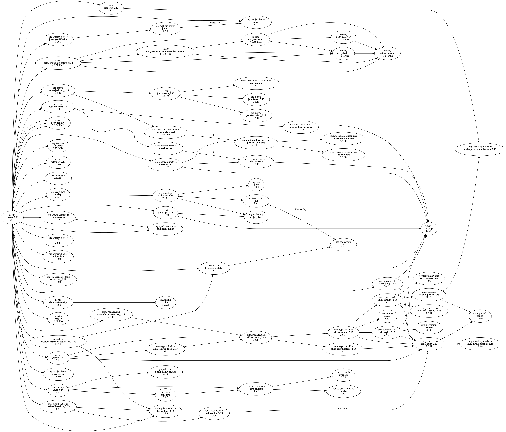

의존도¶
라이브러리 의존도¶
Xitrum은 다양한 라이브러리를 포함하고 있습니다. 원한다면 직접 라이브러리를 사용할 수 있습니다.
주요 종속 라이브러리:
Scala: Xitrum은 Scala로 작성되었습니다.
Netty: WebSocket과 제로 복사 파일 전송 등 Xitrum의 비동기 HTTP(S) 서버의 많은 기능은 Netty의 기능을 바탕으로 구현되었습니다.
Akka: 주로 SockJS 위해 Akka는 Typesafe Config 에 의존하고 있으며 Xitrum 또한 그것을 사용하고 있습니다.
기타 주요 종속 라이브러리 :
Commons Lang: JSON 데이터의 이스케이프 처리에 사용하고 있습니다.
Glokka: SockJS 액터 클러스터링에 사용하고 있습니다.
JSON4S: JSON 파싱과 생성을 위해 사용합니다. JSON4S은 Paranamer 의존 라이브러리로 사용하고 있습니다.
Rhino: Scalate에서 CoffeeScript를 JavaScript로 컴파일하는 데 사용하고 있습니다.
Sclasner: 클래스 파일과 jar 파일에서 HTTP 경로를 검색하는 데 사용하고 있습니다.
Scaposer: 국제화를 위해 사용하고 있습니다.
Twitter Chill: 쿠키와 세션의 직렬화, 역직렬화에 사용하고 있습니다. Chill는 Kryo 를 바탕으로 하고 있습니다.
Xitrum 프로젝트 뼈대 는 다음 도구를 포장하고 있습니다:
scala-xgettext: 컴파일시에 .scala 파일 국제화 문자열을 확장합니다.
xitrum-package: 프로덕션 환경에 배포하기 위해 프로젝트를 패키징 합니다.
Scalive: Scala 콘솔에서 JVM 프로세스에 연결하여 동적 디버깅을 가능하게 합니다.
관련 프로젝트¶
데모:
xitrum-new: 신규 Xitrum 프로젝트의 골격.
xitrum-demos: Xitrum 각 기능의 데모 프로젝트.
xitrum-placeholder: Xitrum으로 화상 이미지 응용 프로그램의 데모.
comy: 간단한 URL 숏터 앱 데모.
xitrum-multimodule-demo: SBT 멀티 모듈 프로젝트의 데모.
플러그인:
xitrum-scalate: Xitrum의 기본 템플릿 엔진. Xitrum 프로젝트 뼈대 에서 사용하고 있습니다. 다른 템플릿 엔진을 사용하는 것도 또한 필요가 없으면 프로젝트에서 삭제해 버리는 것도 가능합니다. xitrum-scalate은 Scalate 와 Scalamd 에 의존하고 있습니다.
xitrum-hazelcast: 캐시와 서버의 세션 클러스터링을 하는 플러그인.
xitrum-ko: Knockoutjs 를 간편하게 사용할 수 있도록 하는 플러그인.
기타 프로젝트:
xitrum-doc: Xitrum Guide 소스 코드.
xitrum-hp: Xitrum Homepage 소스 코드.